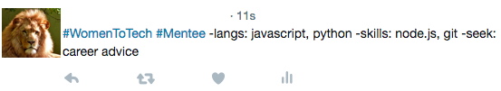

Your tweet should include:
#WomenToTech #Mentee
Let us know that you're signing up to our platform as a mentee
-langs:
Let us know the languages you know or are learning
-skills:
Let us know what other programming skills you have or want to improve
-seek:
Let us know what you are looking to get out of the mentoring relationship
Click here to tweet us now!

To consider before tweeting
What you are -seek(ing) could include:
Career advice:
Work on CV
Interview prep
Advice about the industry
Technical advice:
Specific questions
Teaching code
And also:
Networking
Providing resources
State your top 3 -seek(s)
We ask that mentors state everything that they can offer, and mentees state the top three things they are looking for.
That way, we can match up mentees with mentors who are best suited for their needs.
Split your tweets
If you have a lot to say, you can split your content into two tweets.
Just make sure you end them with "x/2".